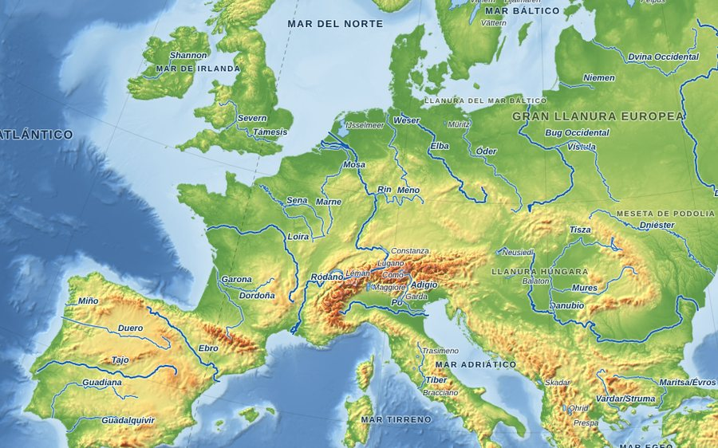
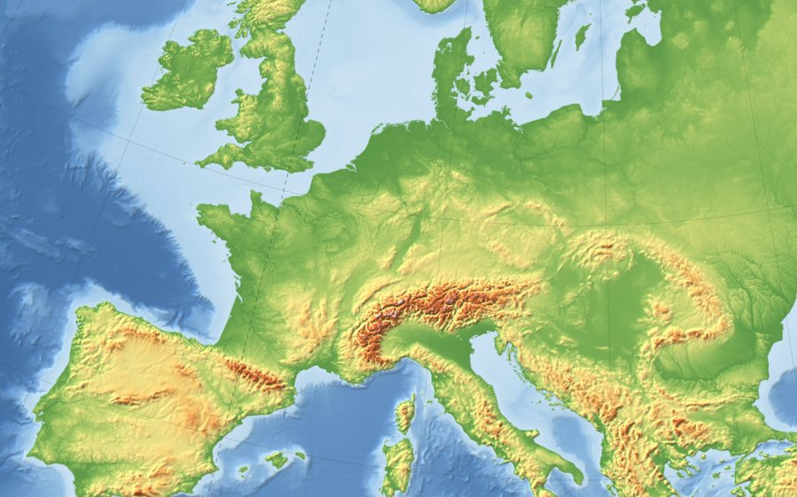
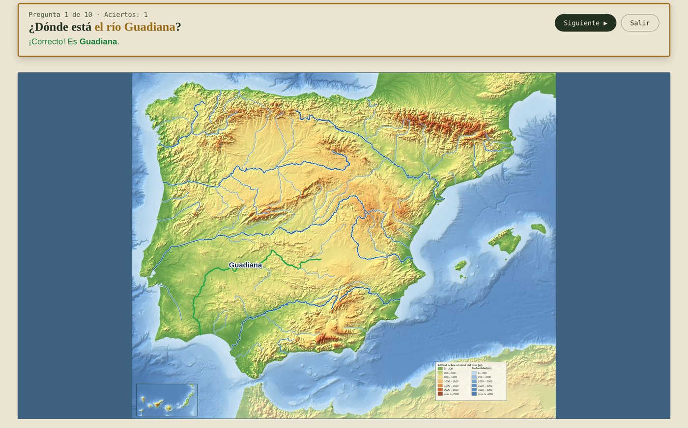

Atlas Abierto es una colección de mapas gratuitos para estudiar, jugar e imprimir. Se usan desde cualquier dispositivo, en casa o en clase, y no hace falta registrarse: sin publicidad, sin cookies y sin datos personales. Esta página explica cómo sacarles partido, seas profesor, alumno o familia.
Físico: relieve real con altitudes y profundidades, cordilleras, picos y regiones.
Hidrografía: ríos, lagos y mares.
Accidentes costeros: golfos, cabos, estrechos, islas y penínsulas.
Político: países, capitales y fronteras (en España, comunidades autónomas y provincias).
Fronteras en disputa: usamos la base de datos GISCO (Eurostat, 2024), que sigue el criterio de la ONU y la UE. Kosovo se dibuja dentro de Serbia, Taiwán dentro de China y el Sáhara Occidental como territorio separado de Marruecos; Cachemira y otras zonas sin soberanía resuelta aparecen en color neutro. Los mapas políticos de Europa, África y Asia explican sus casos en el panel «Criterios sobre territorios en disputa».
Además están los mapas Geológicos, del mundo y de cada continente (Europa, África, América, Asia y Oceanía), con las placas tectónicas, sus límites, los volcanes y los terremotos de magnitud 6 o más, sobre relieve real. Se puede activar o quitar cada capa, igual que en los demás mapas (los terremotos empiezan ocultos, para ver mejor las placas). Al pulsar un volcán o un terremoto se muestran sus datos, y los mapas se pueden ampliar y mover.
En los mapas políticos de los continentes (Europa, África, América, América del Norte, América del Sur, Asia y Oceanía), al pulsar un país aparece su ficha: bandera, capital, población, superficie, densidad, moneda e idiomas oficiales. La población es una estimación de 2019, así que sirve para comparar países, no como cifra actual. Mientras se juega, las fichas no se muestran.
Personalizar un mapa
Sobre cada mapa está el panel de personalización. Marca o desmarca una categoría (por ejemplo Ríos o Lagos) para mostrarla u ocultarla en todo el mapa.
El panel de personalización: arriba a la izquierda los botones Completo, Mudo y Jugar, arriba a la derecha Imprimir, y debajo las casillas por categoría.
Para elegir elementos concretos, pulsa el número que hay junto a cada categoría (el «41 ▾» de Ríos). Se abre la lista y puedes marcar solo los que estudies, o usar Marcar todos y Ninguno.
Lista desplegada: marca solo los ríos que quieras que aparezcan.
Botones «Completo» y «Mudo»
Completo: el mapa con todos sus elementos y nombres.
Mudo: deja solo la base con el relieve, sin ríos, lagos ni nombres. Sirve para que el alumnado los dibuje y los rotule. También puedes partir de Mudo y marcar solo lo que quieras que aparezca.

Completo: con ríos, lagos y nombres

Mudo: solo la base con el relieve
Jugar: «Localiza en el mapa»
Todos los mapas tienen un botón Jugar, junto a Completo y Mudo. Convierte el mapa en un juego de preguntas: el programa dice un nombre («¿Dónde está el río Guadiana?») y tú lo señalas con un clic o un toque. No hace falta instalar nada ni crear cuentas.
El botón Jugar, junto a Completo y Mudo.
Cómo se juega
Pulsa «Jugar» y elige qué quieres preguntar, cuántas preguntas (10, 20 o todas) y cuántos intentos (2 o 1 por pregunta).
Señala en el mapa lo que se pregunta. Los nombres del mapa se ocultan durante el juego.
Mira el resultado: si aciertas, el elemento se ilumina en verde y aparece su nombre; si fallas, te dice qué has señalado y, tras el último intento, marca la respuesta correcta en naranja.
Pasa solo a la siguiente pregunta, sin pulsar nada. Al final verás cuántas has acertado (y cuántas a la primera) y la lista de las que conviene repasar, con un botón para repetir solo esas.
Antes de empezar eliges qué preguntar, cuántas preguntas y cuántos intentos.

Una pregunta acertada: el río Guadiana se ilumina en verde con su nombre.
Qué se puede preguntar
Político: países y capitales; en España, además, comunidades autónomas, provincias y sus capitales.
Hidrografía: ríos y lagos (también «los ríos principales» para empezar por lo básico), y según el mapa países, regiones o mares.
Físico y relieve: ríos, lagos, picos, cordilleras, regiones naturales, islas, penínsulas, accidentes costeros y mares.
Geológico: placas tectónicas, volcanes, dorsales, fosas, cordilleras y fallas (en el mapa mundial, también los grandes terremotos).
Accidentes costeros: cabos, golfos, estrechos, islas, penínsulas y mares.
El juego respeta el panel de personalización: si marcas solo ocho ríos, preguntará únicamente por esos. Así eliges qué se estudia en cada sesión.
Consejos
En pantalla grande (pizarra digital, portátil, tablet): el mapa se ajusta a la altura de la pantalla para no tener que desplazarse. En el móvil en vertical el mapa queda pequeño; es mejor la tablet o el móvil en horizontal.
Mares, cordilleras y regiones se aciertan haciendo clic cerca de donde aparece su nombre en el mapa completo, no sobre una forma exacta.
Para salir en cualquier momento, pulsa Salir o la tecla Esc.
El juego se calcula en el propio navegador: no se guarda ni se envía ningún dato de nadie, ni siquiera las puntuaciones.
Imprimir
Cuando el mapa esté como quieres, pulsa el botón Imprimir en A4 horizontal, que está arriba a la derecha del panel de personalización. Se imprime en A4 apaisado, sin el panel ni el menú.
El botón de impresión, arriba a la derecha del panel.
Ideas según quién eres
Si eres docente
Mapa mudo para ejercicios y exámenes: pulsa Mudo, imprime la base y que el alumnado dibuje y rotule los ríos y los lagos.
Pizarra digital: proyecta el mapa y muestra u oculta elementos para ir descubriéndolos, o juega por turnos o por equipos.
Seleccionar solo lo que se estudia en cada sesión, por ejemplo los ríos de la península ibérica.
Comparar un mapa físico y uno político de la misma zona.
Si eres familia
Deberes de Geografía: abre el mapa del tema (por ejemplo, la hidrografía de España) e imprímelo en mudo para que lo rellenen.
Jugar juntos en una tablet o en el ordenador: preguntad por turnos «¿dónde está…?» y comparad aciertos.
Si eres alumno o alumna
Estudia con el mapa completo y compruébate después con el modo Jugar.
Repasa lo que falles: al final de cada partida puedes repetir solo las preguntas que has fallado.
Imprime el mapa mudo y rotúlalo a mano para memorizar.
Preguntas frecuentes
¿Cuesta algo o tengo que registrarme?
No. Es gratis y no hay cuentas ni publicidad.
¿Se guardan mis datos?
No. La web mide las visitas de forma anónima, sin cookies ni datos personales, y el juego funciona dentro de tu navegador sin enviar nada.
¿Puedo usar los mapas en mis materiales?
Sí. Todos tienen licencia CC BY 4.0: puedes usarlos, copiarlos, modificarlos e incluirlos en tus materiales, dentro y fuera del centro, citando «Atlas Abierto». Más detalles en Licencias y fuentes.
¿Funciona en el móvil?
Sí, aunque los mapas se aprovechan mejor en una pantalla grande o con el móvil en horizontal.